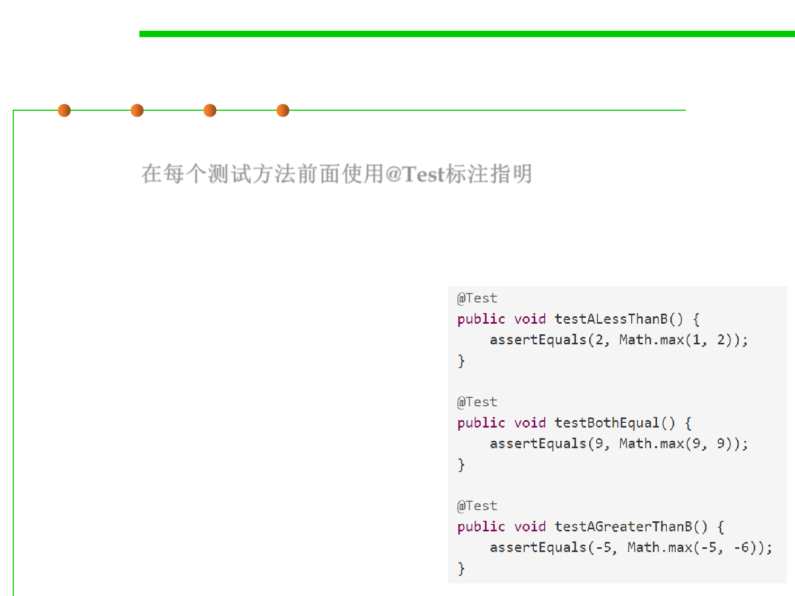

Junit test case
7.5 Testing and Test-First Programming
▪ A JUnit unit test is written as a method preceded by the annotation
@Test. 在每个测试方法前面使用@Test标注指明
▪ A unit test method typically contains one or more calls to the module
being tested, and then checks the results using assertion methods like
assertEquals, assertTrue, and assertFalse.
▪ For example, the tests we chose for
Math.max() above might look like
this when implemented for JUnit:
,